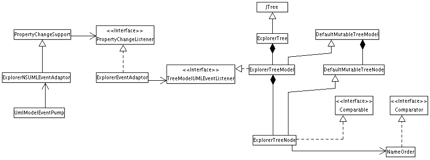

- Purpose
- to provide tree views of the model elements, diagrams and other objects.
- Located
org.argouml.ui.explorer and sub-packages
- Layer
 The Explorer used to be called the Navigator.
The Explorer used to be called the Navigator.
Design of the subsystem
Requirements
The Explorer must react to user and application events.
User events include
R1: selection of a node, which must notify the other views to make the same selection.
R2: right click on a node, which brings up a pop-up menu.
R3: selection of another perspective in the Combo box, which must change the explorer to that perspective. A perspective provides a different view of the model that will focus on one or other part of the model.
R4: node expansion and collapse.
R5: It is possible to drag name-space nodes on to other name-space nodes. Dropping a name-space node onto another, will, if the destination name-space is a valid one, update the explorer and model.
R6: sorting of nodes with a particular Ordering. [an ordering is a comparator that orders child nodes in the explorer, e.g. by name and/or type].
R7: copy diagram to clipboard functionality for windows/java5 users.
R8: tool-tip showing node name and type.
R9: standard multiple discontinuous selection with mouse and keyboard.
R10: the user can configure the perspectives using a dialog. Perspectives can be added, deleted, renamed, reordered and duplicated. Perspective rules can be added and removed from a perspective. The changes are saved to the user properties. If there are user perspectives when ArgoUML starts, it loads these, otherwise it loads a default set of perspectives.
Application events include
R11: change in selection in another view, any relevant rows to be highlighted.
R12: the UML model changes, the tree must update to reflect additions/deletions and name changes in the model.
R13: change of project, the tree must update. the root node should be expanded with the default diagram selected.
Public APIs and SPIs
The Explorer Subsystem provides/will provide the following APIs:
API1: Addition / Removal of a Perspective from the PerspectiveManager. Status: implemented
API2: Addition / Removal of a Perspective Rule from a Perspective. Status: implemented
API3: Selection of the Perspective to be displayed by the Explorer. Status: not implemented
API4: Selection of Ordering for Explorer nodes. [an Ordering is a comparator that orders child nodes in the Explorer] Status: not implemented
The Explorer Subsystem provides/will provide the following SPIs:
SPI1: Configurable Node pop-up menu. Status: not implemented
SPI2: New PerspectiveRules can be defined and registered with the 'library' of available rules. Status: not implemented
SPI3: New Orderings can be defined and registered with the available orderings. [an ordering is a comparator that orders child nodes in the explorer] Status: not implemented
The APIs collectively represent the Explorer subsystem facade and the SPIs represent plug-ins.
Details of the Explorer Implementation
The Explorer is currently shown in the Explorer Pane (org.argouml.ui.NavigatorPane) - the upper left hand pane of ArgoUML.
Except for the Explorer Pane, The Explorer is located in org.argouml.ui.explorer.*. The explorer has been refactored since version 0.15.2 so that it has a slightly more standard Java Swing implementation.
The explorer perspectives provide the different views of the project. They are implemented by sets of PerspectiveRules that get the child nodes for any parent node in the tree.

The Explorer has 3 main subcomponents: a customized JTree, a customized TreeModel and an interface for generating child nodes in the tree which forms the tree Perspective.
The JTree (org.argouml.ui.explorer.ExplorerTree) has been customized to maintain consistent selection state with the other model views. It provides a pop up menu (ExplorerPopup) for performing actions on specific model elements. There is specific functionality in DnDExplorerTree for Drag and drop, and in ExportExplorer for copy diagram to clipboard.
The TreeModel is a customized DefaultTreeModel that listens to changes in the UML model. The JTree builds the tree model as the user expands nodes, this minimizes the size of the model to those part that the user is interested in. The TreeModel contains custom DefaultMutableTreeNodes, ExplorerTreeNodes, that maintain their own order on child nodes; this will typically be an alphabetical order on the model element names. However, it could be enhanced to include more powerful orders like total subtree size.
The model uses the third part of the Explorer design, PerspectiveRules, to add child nodes to the leaves of the tree. The structure of the tree is wholly dependent on the collection of PerspectiveRules that together provide a specialized view of the UML model. This is very flexible and extensible. The org.argouml.ui.explorer.rules package contains a default set of PerspectiveRules.
Each node is displayed with a name and an Icon, representing the type of node it is in the UML model. This is done using the org.argouml.uml.ui.UMLTreeRenderer (for the Icon), and the text is produced in the convertValueToText(...) method in org.argouml.ui.explorer.ExplorerTree.
How do I ...?
...add another perspective?
The perspectives can be configured using the org.argouml.ui.explorer.PerspectiveConfigurator by the User. The changes to the pre-defined built-in defaults are stored in the argo.user.properties file.
If you want to do this as part of an extension to ArgoUML then you should use (see above) APIs 1,2 and 3, and SPI 2. The functions needed are present in the PerspectiveManager.
...improve the PopUp menu?
There is no way of doing this currently without modifying the core of ArgoUML. You could use SPI1 when it gets implemented.
...extend the Explorer in other ways?
The best way is to use the above APIs/SPIs; if they are not implemented then it would be best to implement them and feedback your improvements to the ArgoUML project so that your code works on a recognized public API that will be maintained in the future.
...add new rules for new model elements?
You should create a GoRule/PerspectiveRule in org/argouml/ui/explorer/rules. There are plenty of examples to look at. The important things to get right is of course that:
- you return the right children
return the objects that the TreeModel must listen to to know when to update the node (and the list of immediate children) After that you must register your GoRule in org/argouml/ui/explorer/PerspectiveManager
- add it to the list in loadRules()
perhaps add it to some of the default perspectives in oldLoadDefaultPerspectives(), I guess And then I think it should just be a matter of recompiling and possibly switching to the perspective you added your rule to.
...tell the explorer to refresh?
You are not supposed to. The TreeModel is supposed to listen to events and refresh affected parts. And this is where the lack of events for adding diagrams creates a problem.
Obviously it would be possible to add an operation somewhere to revalidate the expanded parts of the Explorer, but I'm not aware of the existence of such an operation today.
...navigate programmatically to a certain explorer element so that its path is exploded?
In general you can't. The Explorer tree is lazy in that it only explores the parts of the tree that the user has opened. And since the GoRules are general navigating to them would require a complete tree search. Which is also complicated by the fact that the answer is not unique and there can be branches with infinite depth.
In reality it would be possible to create an algorithm to search out one occurrence of an element (since the model only contains finitely many elements and I assume that no-one will add go rules that add branches of infinite length that does not infinitely often contain elements from the model), but I don't think anyone has done it. Obviously finding all occurrences cannot be done.